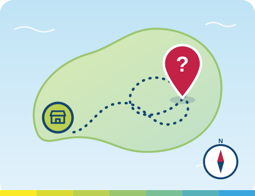

O livro do Mercado
Leia, ouça ou baixe a história do Mercado Central.
Erro 404
A página que você procura não existe, mudou de endereço ou o link está digitado errado. Mas não se preocupe: todo bom passeio por São Luís começa no Mercado Central.
Sem internet? As páginas que você já visitou continuam disponíveis neste aparelho.

Leia, ouça ou baixe a história do Mercado Central.
Do Mercado para os pontos turísticos da ilha, com roteiros prontos.
Recursos para ler, ouvir e navegar do seu jeito.